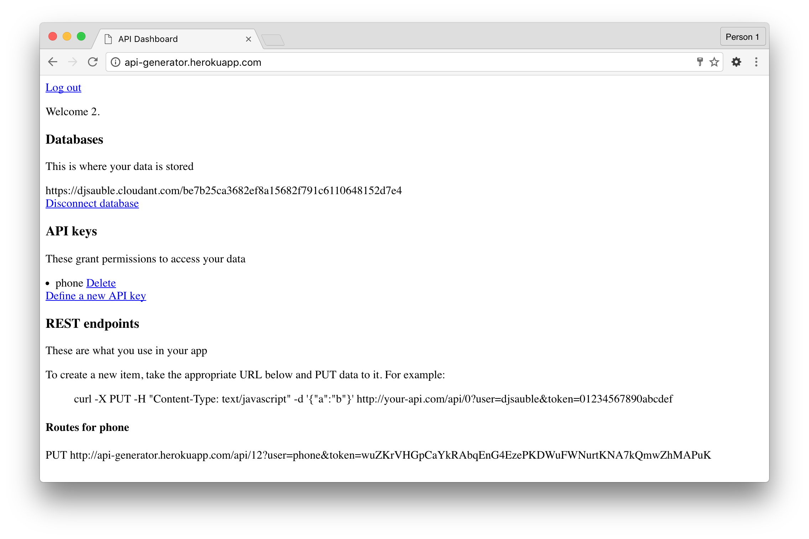

Forrest Cruise
Back to home pageI am a runner. If you’re a recreational runner like me, you’ve never won a race, you’ve never been part of the Olympic team, and you’ve never won a medal. If you’re like me, running isn’t about being the best.
These are the things I care about as a runner:
- I want to avoid getting injured.
- I want to achieve a bucket list run or two.
- I want to be in great shape 20 years from now.
All of these are long-term things. To avoid injury, you need to stay consistent and avoid spikes in mileage over weeks, months, and years. To achieve a bucket list run, you might need to slowly ramp your mileage for months or years. To be in great shape 20 years from now, you need to stay motivated.
To focus on the future, I decided to use weeks as the sole unit of aggregation. To keep people motivated over the long term, I eschewed a social component in favor of goal tracking for your bucket list items.
I decided to design and build the entire thing myself. Never having built an end-to-end SAAS project before, I learned a bunch about Node.js, iOS development, and cloud services (Heroku, IBM Cloudant).
To start, I built a basic service in Ruby/Sinatra to take run data submitted over REST and persist it in a CouchDB database (IBM Cloudant).
With this service in place, I decided to build an iOS app to record runs and submit them to the service.

In addition, I thought it would be interesting to have the ability to automatically suggest routes based on the number of miles you want to run. I used GIS data from Portland Metro to intelligently map routes, then used turn-by-turn directions to guide through the route.
This was one of those ideas that sounded good in theory, but didn’t work in actuality. It was annoying to be told where to run, and since there are usually only a handful of good routes in any given area, once you’ve become familiar with an area, you don't need turn-by-turn directions anymore. I removed this feature.
Next, I decided to spruce up the web dashboard and add a nice landing page to explain how the whole thing works. I converted the backend to Node.js and the frontend to Backbone.js, so I could share NPM modules between them.
Finally, I added the weekly statistics, made it possible to browse your running history, and wired up the goal setting bits. If you want to run a 50 mile ultramarathon, you set your goal, and the dashboard uses a logarithmic function to help you slowly increase your mileage.
The app uses WebSockets, so if new runs are submitted from the app, they will show up automatically, no refresh necessary.
This app is still in active development. Currently, I’m integrating more closely with the Apple HealthKit API to make the offline experience better. For example, if you decide to go to a remote cabin and train for a race, it should be possible to see all this dashboard information with no web access.
Below is a screenshot of the current state of the iOS app. Red indicates total distance spent walking or running. Blue indicates running distance each week. Green indicates average pace each week (lower is better).
Relative trends are the important thing here. You want to see steady progress over time, but the absolute distance doesn't matter so much. I do plan to show the trend in relation to your goal, so you can get a sense of how close you are to achiving it.
Also, since smartwatches are a much better fitness companion than a phone, I expect to redesign this for the Apple Watch in the coming months.
Back to home page